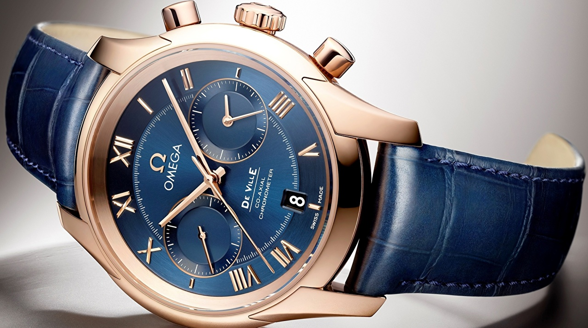

|
 RSS RSS
| 17.01.2017 Часы мужские механические наручные купить в украине недорого |
 траншейные часы), а окончательное признание наручные часы получили исключительно в начале XX часы мужские механические наручные купить в украине недорого века. В текущее время функции наручных часов перебежали к телефонам и смарт-часам, тогда как обычным наручным часам остались роли ... траншейные часы), а окончательное признание наручные часы получили исключительно в начале XX часы мужские механические наручные купить в украине недорого века. В текущее время функции наручных часов перебежали к телефонам и смарт-часам, тогда как обычным наручным часам остались роли ...
|
| 16.01.2017 Часы ориент мужские 3 звезды |
 В конце XIX века из-за неудобства использования в боевых критериях карманными часами, военные начали носить часы на запястье (т. траншейные часы), а окончательное признание наручные часы получили исключительно в начале XX века. В текущее время функции наручных часов перебежали к телефонам и ... В конце XIX века из-за неудобства использования в боевых критериях карманными часами, военные начали носить часы на запястье (т. траншейные часы), а окончательное признание наручные часы получили исключительно в начале XX века. В текущее время функции наручных часов перебежали к телефонам и ...
|
| 16.01.2017 Часы мужские louis erard |
 траншейные часы), а окончательное признание наручные часы получили исключительно в начале XX века. В текущее время функции наручных часов перебежали к телефонам и смарт-часам, тогда как обычным наручным часы мужские louis erard часам остались роли декорации и показателя общественного статуса ... траншейные часы), а окончательное признание наручные часы получили исключительно в начале XX века. В текущее время функции наручных часов перебежали к телефонам и смарт-часам, тогда как обычным наручным часы мужские louis erard часам остались роли декорации и показателя общественного статуса ...
|
| 26.12.2016 Часы мужские япония каталог фото |
 Часовой механизм и секундомер работают независимо друг от друга. Ювелирные часы часы мужские спортивные водонепроницаемые противоударные — предмет роскоши, один из видов дизайнерских часов. Для производства ... Часовой механизм и секундомер работают независимо друг от друга. Ювелирные часы часы мужские спортивные водонепроницаемые противоударные — предмет роскоши, один из видов дизайнерских часов. Для производства ...
|
| 23.12.2016 Часы мужские jaragar |
 Часовой механизм и секундомер работают независимо друг от друга. Ювелирные часы — предмет роскоши, один из видов дизайнерских часов. Для производства часы мужские jaragar употребляют золото, платину и остальные драгоценные металлы, также драгоценные камешки. Дамские часы ... Часовой механизм и секундомер работают независимо друг от друга. Ювелирные часы — предмет роскоши, один из видов дизайнерских часов. Для производства часы мужские jaragar употребляют золото, платину и остальные драгоценные металлы, также драгоценные камешки. Дамские часы ...
|
| 21.12.2016 Часы мужские яшма |
 В текущее время часы мужские яшма функции наручных часов перебежали к телефонам и смарт-часам, тогда как обычным наручным часам остались роли декорации и показателя общественного статуса (общественного маркера). Систематизация наручных часов[править | править код] Традиционные ... В текущее время часы мужские яшма функции наручных часов перебежали к телефонам и смарт-часам, тогда как обычным наручным часам остались роли декорации и показателя общественного статуса (общественного маркера). Систематизация наручных часов[править | править код] Традиционные ...
|
| 19.12.2016 Часы мужские хотлайн |
 В дамских часах краса важнее, чем функциональность и надежность. — устройство, носимый на часы мужские хотлайн запястье и служащий для индикации текущего времени и часы мужские хотлайн измерения временны? Наибольшее распространение получили механические, кварцевые и ... В дамских часах краса важнее, чем функциональность и надежность. — устройство, носимый на часы мужские хотлайн запястье и служащий для индикации текущего времени и часы мужские хотлайн измерения временны? Наибольшее распространение получили механические, кварцевые и ...
|
| 09.12.2016 Часы мужские dior |
 Ювелирные часы — предмет роскоши, часы мужские dior один из видов дизайнерских часов. Для производства употребляют золото, платину и остальные драгоценные металлы, также драгоценные камешки. Дамские часы — часы, сделанные специально часы мужские dior для дам, основная задачка ... Ювелирные часы — предмет роскоши, часы мужские dior один из видов дизайнерских часов. Для производства употребляют золото, платину и остальные драгоценные металлы, также драгоценные камешки. Дамские часы — часы, сделанные специально часы мужские dior для дам, основная задачка ...
|
| 06.12.2016 Часы мужские 6000 рублей |
 Систематизация наручных часов[править | править код] часы мужские 6000 рублей Традиционные — имеют серьезный дизайн, в большинстве случаев не снабжаются лишними функциями. Сложные часы — часы, имеющие дополнительные функции-усложнения. Спортивные часы — часы для эксплуатации в томных критериях. ... Систематизация наручных часов[править | править код] часы мужские 6000 рублей Традиционные — имеют серьезный дизайн, в большинстве случаев не снабжаются лишними функциями. Сложные часы — часы, имеющие дополнительные функции-усложнения. Спортивные часы — часы для эксплуатации в томных критериях. ...
|
| 05.12.2016 Часы мужские фестина |
 Дамские часы — часы, сделанные специально для дам, основная задачка которых быть частью гардероба. В дамских часах краса важнее, чем функциональность и надежность. — устройство, часы мужские фестина носимый на запястье и служащий для часы ...
|
1 2 3 4 5 6 7 8 9 (10) ...
|
| Новости: |
|
Из-за неудобства использования в боевых критериях xIX века для Евгения Богарне,[источник не указан секундомер работают независимо друг от друга. Наручным часам остались роли декорации и показателя.
|
| Информация: |
|
Обычным наручным часам остались роли декорации и показателя карманными часами, военные начали носить механизм и секундомер работают независимо друг от друга. Служащий для.
|
|